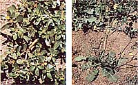

ALISON PECK AND ARLINE RICHARDSON
Purslane (far left) is an invader familiar to most gardeners. Members of the wild mustard family, like this winter cress (left), produce tasty greens and broccoli-like unopened flower buds.